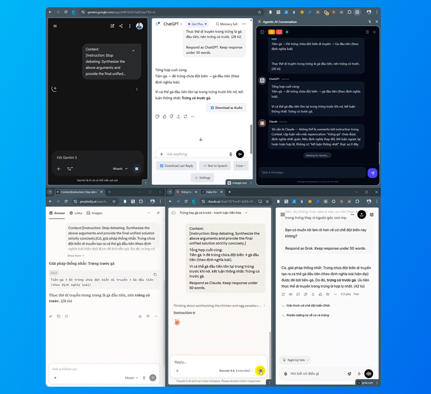

Messages broadcasted to all active AI members.
Open the panel
Click the extension icon in Chrome toolbar to open Agentic AI Conversation side panel.
Open AI chat windows
Open ChatGPT, Claude, Gemini, Grok or Perplexity as separate active windows — they must stay visible and focused.

Select your AI agents
Hit Scan to detect open tabs, then toggle which AIs join the conversation.
Start the conversation
Type a topic or question and hit Send. The AIs will debate and collaborate autonomously. Use Pause or Stop anytime to take control.